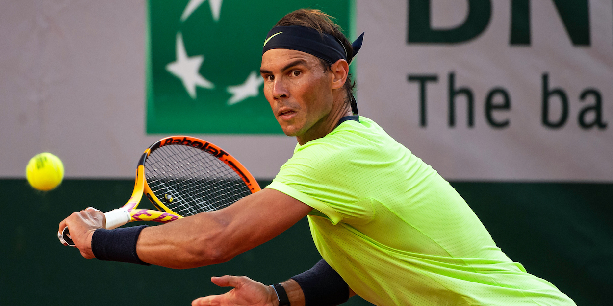

El Abierto de Francia (en francés, Championnats Internationaux de France de Tennis de Roland-Garros) —denominado así en honor al aviador francés homónimo—, es un torneo oficial de tenis que conforma el Grand Slam, jugado desde su inauguración en 1891 bajo la organización y el amparo de la Federación Francesa de Tenis (FFT). Es el principal torneo celebrado sobre tierra batida en el mundo y el segundo en orden cronológico de los Grand Slams tras el Abierto de Australia. Es a su vez el predecesor del Campeonato de Wimbledon y del Abierto de Estados Unidos y único de los cuatro grandes torneos celebrado sobre esta superficie. El torneo se desarrolla durante dos semanas y media. Comienza a finales del mes de mayo en París, Francia, en las instalaciones del complejo Stade Roland Garros. La final del torneo se celebra en la pista central Philippe-Chatrier que posee una capacidad de 15 059 espectadores, la de mayor aforo entre las diecinueve canchas que posee el recinto. La construcción fue debida a la hazaña de los cuatro tenistas franceses que lograron conquistar la Copa Davis en suelo americano en la edición de 1927.4 René Lacoste, Henri Cochet, Jean Borotra y Jacques Brugnon, denominados como «Los cuatro Mosqueteros» poseen en el recinto unas estatuas conmemorativas en recuerdo del suceso.
Roland Garros 1888-1918
Es uno de los torneos más importantes del mundo y uno de los más antiguos, está reconocido en primer lugar en las citadas características en las competiciones sobre polvo de ladrillo debido a su condición de Grand Slam. La superficie ofrece un tipo de juego lento. En caso de llegar a los cinco sets en la categoría masculina no se juega un desempate en el quinto y definitivo sino que ha de ganarse por una diferencia de dos juegos. Esta y otras cualidades le llevan a ser considerado como el torneo más duro y exigente del mundo debido a la demanda física y mental para el jugador, junto a Wimbledon. El público usa tradicionalmente el sombrero de paja toquilla. El tenista que más veces ha ganado el torneo en categoría individual masculina, con trece victorias, es el español Rafael Nadal —durante la era Open—, seguido del francés «Max» Décugis —durante el período anterior y bajo su denominación de Campeonato de Francia—, con ocho triunfos, mientras que la categoría individual femenina se encuentra dominada por la estadounidense Chris Evert quien se proclamó siete veces campeona durante la era Open. En 2020 ha visto la luz una remodelación del complejo. Entre las novedades se incluye una mejora general de las instalaciones así como el incremento del aforo de la pista central que ha pasado a tener un techo retráctil —a semejanza del ya utilizado en la Caja Mágica de Madrid— como prevención de las inclemencias meteorológicas habituales en los últimos años.
Un joven Rafael nadal celebrando el titulo del año 2005. El español es el maximo ganador del certamen con 13 titulos
